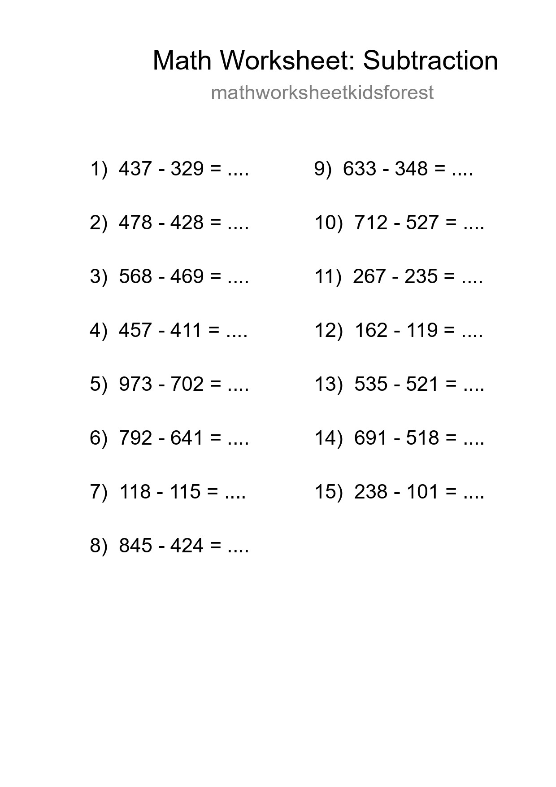
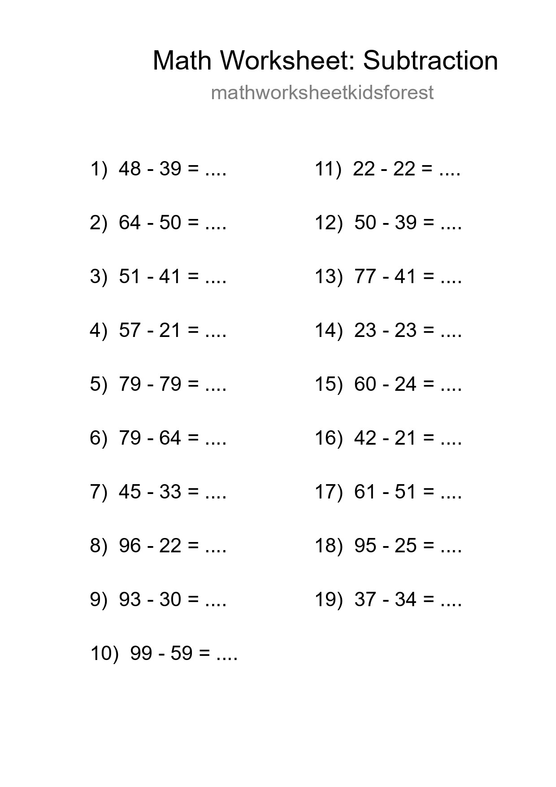
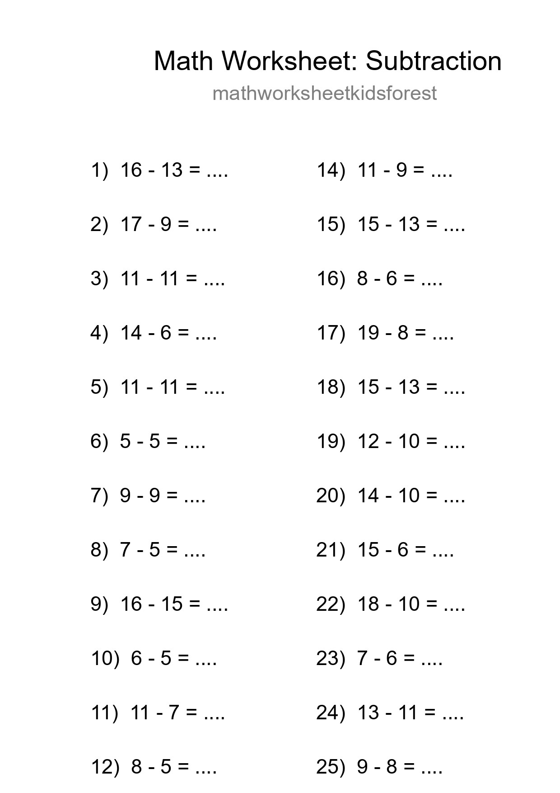
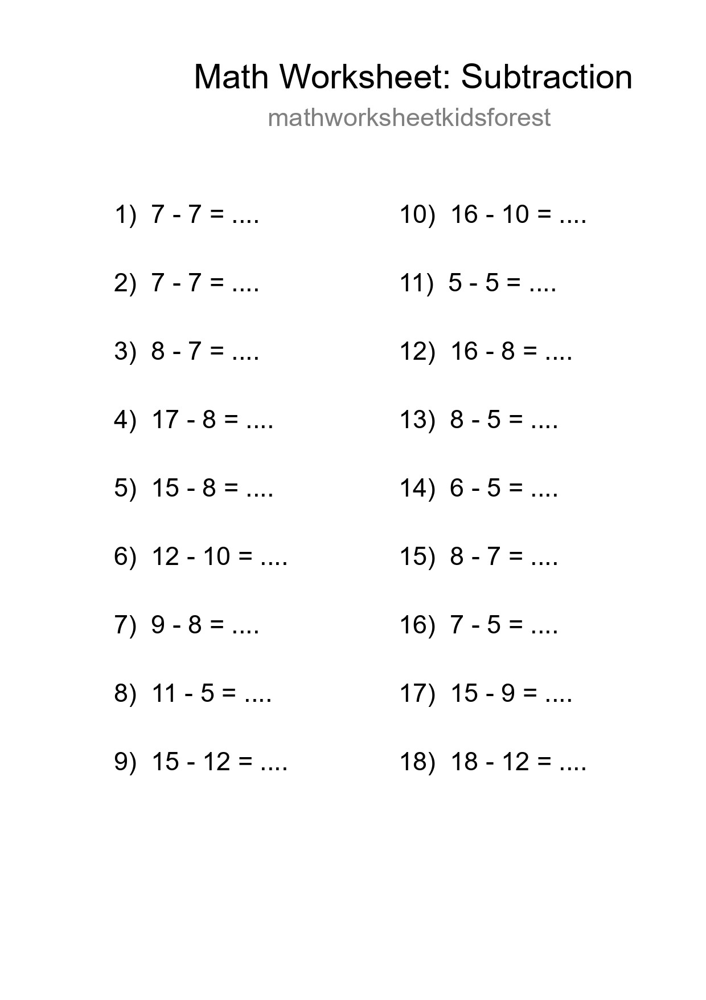

Free 17 Subtraction Math Worksheet For Grade 5 - Part 9

Free 25 Subtraction Math Worksheet For Grade 5 - Part 21

Grade 5 Subtraction Practice Worksheet (21 Problems) - Part 33

Free 24 Subtraction Math Worksheet For Grade 2 - Part 45

Free 17 Subtraction Math Worksheet For Grade 3 - Part 57

Free 12 Subtraction Math Worksheet For Grade 2 - Part 69

Printable Free 23 Subtraction Math Worksheet For Grade 2 - Part 81

Free 28 Subtraction Math Worksheet For Grade 3 - Part 93

Free 15 Subtraction Math Worksheet For Grade 5 With Answers - Part 105

Printable Free 19 Subtraction Math Worksheet For Grade 3 - Part 117

Grade 2 Subtraction Practice Worksheet (25 Problems) - Part 129

Grade 2 Subtraction Practice Worksheet (18 Problems) - Part 141

Free 25 Subtraction Math Worksheet For Grade 3 - Part 153

Free 12 Subtraction Math Worksheet For Grade 2 With Answers - Part 165

Free 19 Subtraction Math Worksheet For Grade 5 - Part 177